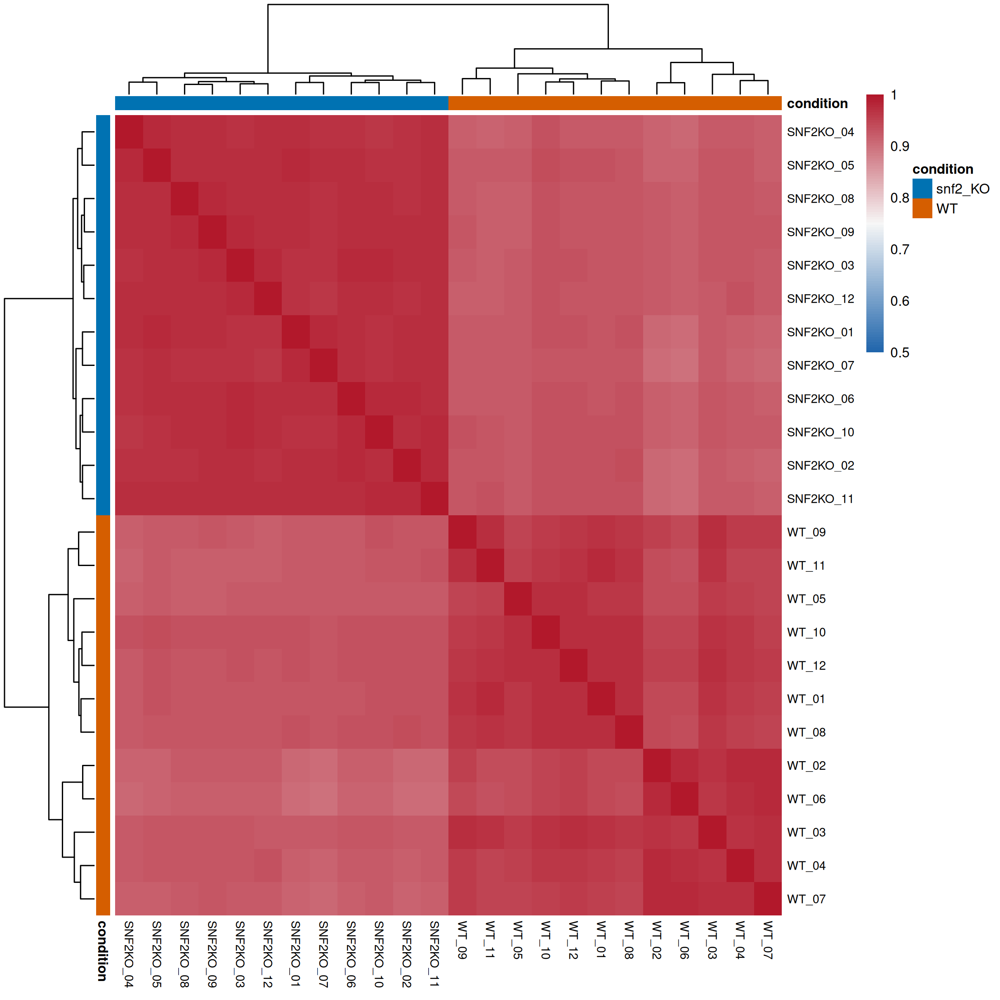
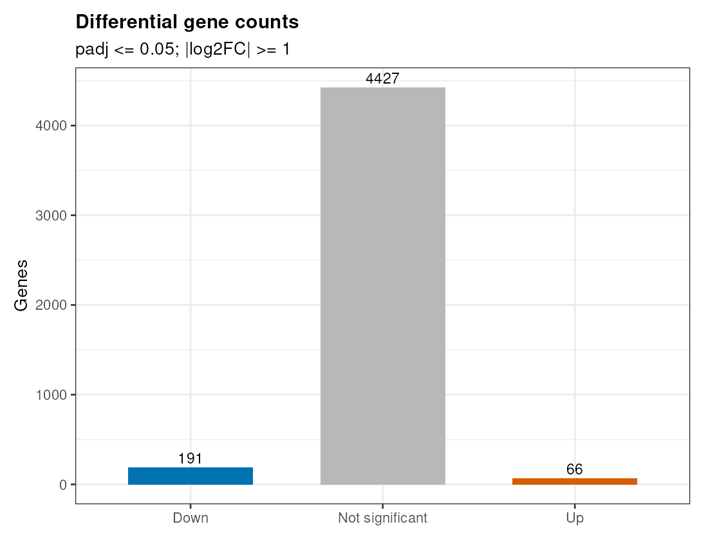
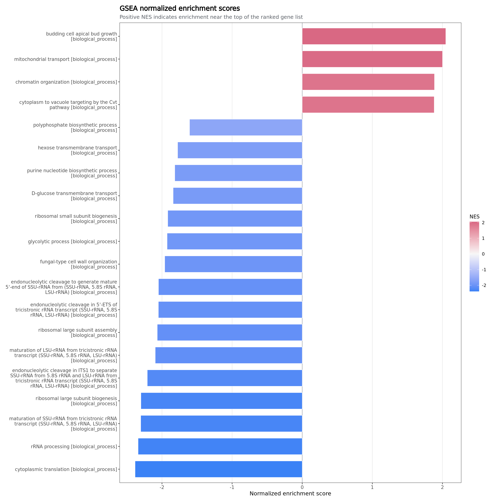

Sample correlation样本相关性
Live Example在线示例
A complete public reference example produced by rnaseq-standard-flow 0.3.0-r1 and collected by rnaseq-report-flow 0.3.0-r2. It includes Salmon expression, HISAT2 alignment, featureCounts-based DE, enrichment, embedded QC HTML payloads, plots, tables, and provenance.
这是由 rnaseq-standard-flow 0.3.0-r1 生成、由 rnaseq-report-flow 0.3.0-r2 收集的完整有参公开示例，包含 Salmon 表达定量、HISAT2 比对、基于 featureCounts 的差异分析、富集、内嵌 QC HTML payload、图表和溯源文件。

Sample correlation样本相关性

DEG counts差异基因数量

GSEA NES
The report collector found 8 modules, 137 collected files, 28 plot files, 56 embedded tables, and 53 embedded HTML/QC reports.
报告收集器发现 8 个模块、137 个收集文件、28 个图文件、56 个内嵌表格和 53 个内嵌 HTML/QC 子报告。